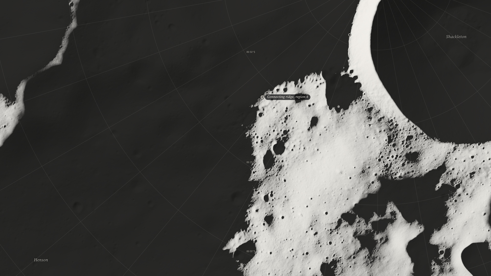
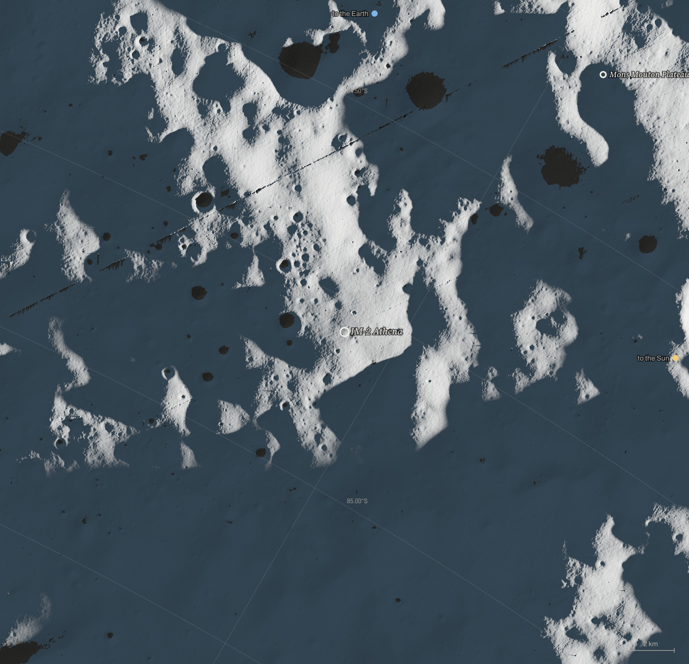
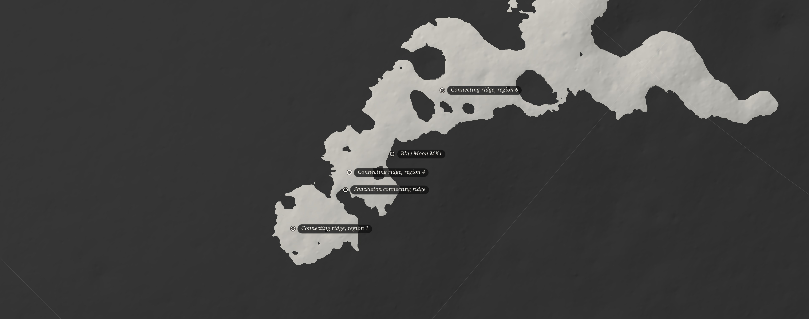
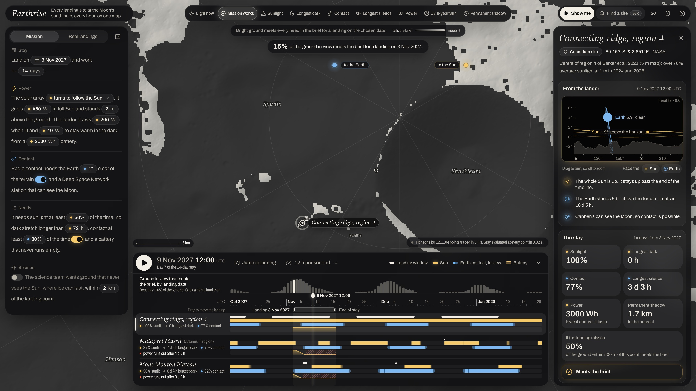
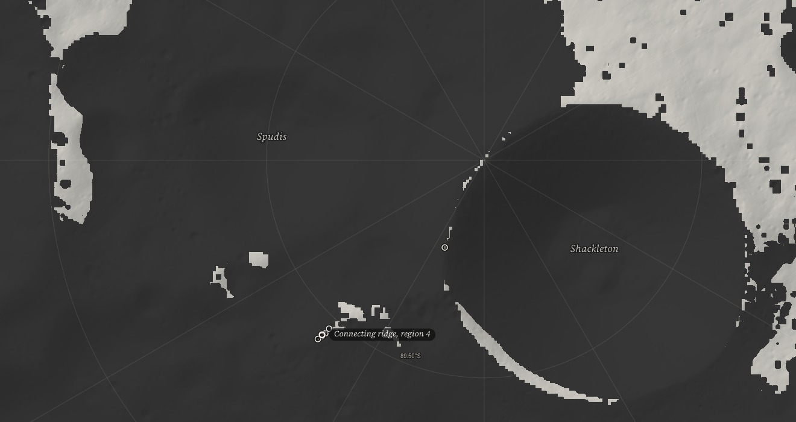
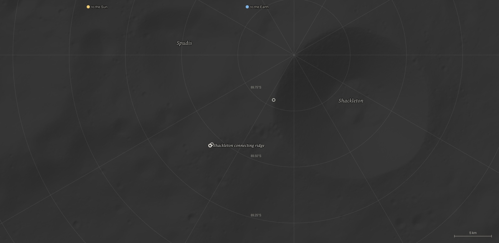
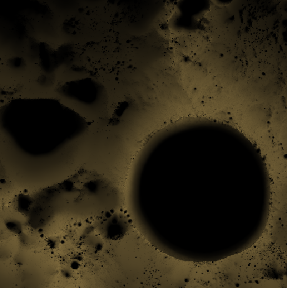
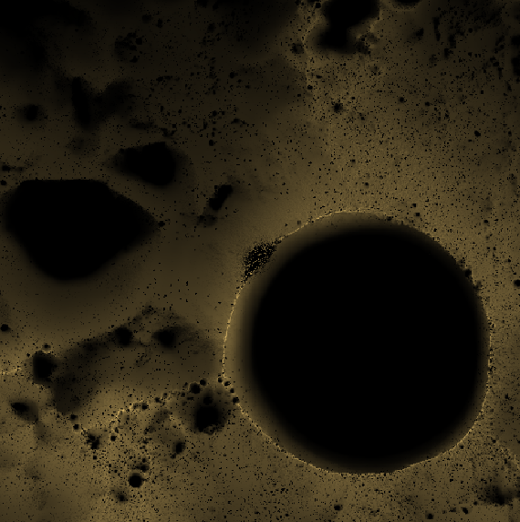
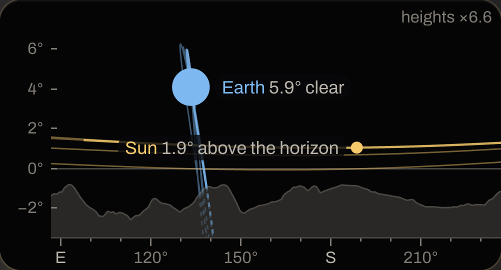

Every landing site at the Moon’s south pole, every hour, on one map.
Team Earthrise, Tashkent:
Maria Dorofeeva, Abulkosim, Vladislav Kasev
NASA Space Apps 2026:
Lunar Landing Site Navigator
Small moves in place or date decide power and radio.
IM-2 Athena landed 250 m off target and lasted one day.

Other tools check one point at a time. Earthrise traces the horizon from every point in view, then runs your whole mission at each one.
Horizons for ... points traced in ... s. Stay evaluated at every point in ... s.

Connecting ridge, 5 m terrain. Bright: meets the brief.
Describe the lander in sentences. Click any point for its sky, battery and landing odds.

Land 3 Nov 2027: ... of the ground in view works. Two weeks later, .... A month later it works again.


LOLA terrain from NASA Goddard, JPL DE440.
| JPL Horizons | 0.00003° |
| Apollo landings, Sun angles | within 0.15° |
| Engine against reference | 0.008° at 24 points |
| NASA Goddard 18.6-year maps, correlation | ... Sun, ... Earth |
| Barker et al. 2021, Table 2, at 5 m | all 42 values within the paper’s bounds |
Sunlight over 18.6 years, same 41 km square


abulkosim.github.io/earthrise
github.com/Abulkosim/earthrise
Runs in a browser, no install, no login. Open source. For mission planners, teachers and anyone curious.
